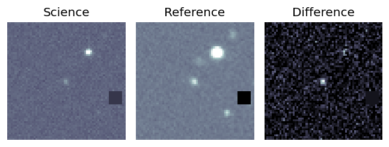
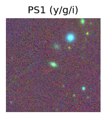
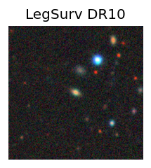
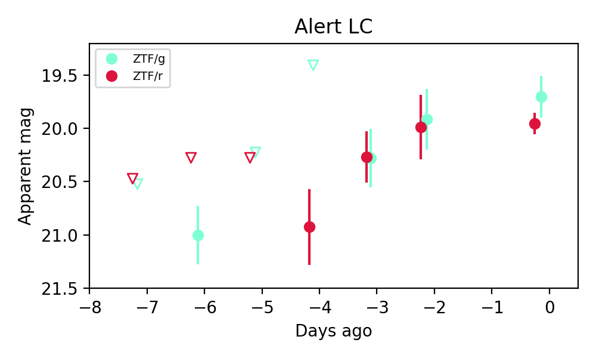

Candidate List 20260702Last night — ZTF: 1,794 passed basic cuts (31 young) · LSST: 0 passed basic cuts (0 young)Previous Day Next Day
Section 1: New Sources (age<1d) Section 2: Old (1-5d) sources observed last nightplaceholder
Section 1: New Afterglow/FBOT Cands Last Night (0)
Section 2: Older Sources Observed Last Night (3)
0. [ZTF] ZTF26abekfzh (FBOT?) [Back to Top] [Share] [Trigger Swift] [Fritz Alert] [Fritz Source] [Lasair]RA, Dec: 206.18123, 1.91457 13h44m43.49s, 1d54m52.45sGalactic (l, b): 332.03298, 61.73786 ext(g-r) = 0.032


TESS: Sectors [23 46 50 91]
PS1: 0 sources in 3 arcsec
LegacySurvey: 1 sources in 3 arcsec Closest: d = 0.87 arcsec, 269.4 deg (east of north) photoz=1.04 (68% bounds 0.64, 1.51), type=PSF peak abs mag = -25.07 (68% bounds -23.76, -26.07)

Extinction-corrected gr color:
From alerts: -0.42 +/- 0.26 mag
Extinction-corrected gi color:
From alerts: -0.35 +/- 0.39 mag
Extinction-corrected ri color:
From alerts: -0.4 +/- 0.26 mag
Consistent with synchrotron, g-r>0!
Rise Rate:
g: 0.3 mag/day
r: 0.22 mag/day
Fade Rate:
1. [ZTF] ZTF26abekjzj (FBOT?) [Back to Top] [Share] [Trigger Swift] [Fritz Alert] [Fritz Source] [Lasair]RA, Dec: 239.90437, 7.85036 15h59m37.05s, 7d51m1.30sGalactic (l, b): 18.52519, 41.5335 ext(g-r) = 0.044


TESS: Sectors [ 51 117]
PS1: 0 sources in 3 arcsec
LegacySurvey: 1 sources in 3 arcsec Closest: d = 3.34 arcsec, 220.4 deg (east of north) photoz=0.12 (68% bounds 0.01, 0.68), type=PSF peak abs mag = -20.32 (68% bounds -15.56, -24.66)

Extinction-corrected gr color:
From alerts: -0.39 +/- 0.13 mag
Extinction-corrected gi color:
From alerts: -0.56 +/- 99 mag
Extinction-corrected ri color:
From alerts: -0.45 +/- 0.24 mag
Rise Rate:
g: 0.44 mag/day
r: 0.32 mag/day
i: 0.06 mag/day
Fade Rate:
r: 0.19 mag/day
2. [ZTF] ZTF26abepfas (FBOT?) [Back to Top] [Share] [Trigger Swift] [Fritz Alert] [Fritz Source] [Lasair]RA, Dec: 272.75148, 53.40168 18h11m0.36s, 53d24m6.03sGalactic (l, b): 81.57628, 27.33578 ext(g-r) = 0.032


TESS: Sectors [ 14 15 18 21 24 25 26 40 41 48 51 52 53 54 55 56 57 58
59 60 73 74 75 78 79 81 82 84 85 86 117 118 119 120]
PS1: 0 sources in 3 arcsec
LegacySurvey: 1 sources in 3 arcsec Closest: d = 0.06 arcsec, 79.3 deg (east of north) photoz=0.14 (68% bounds 0.11, 0.2), type=SER peak abs mag = -19.49 (68% bounds -18.94, -20.34)

Extinction-corrected gr color:
From alerts: -0.28 +/- 0.22 mag
Rise Rate:
g: 0.22 mag/day
r: 0.16 mag/day
Fade Rate: